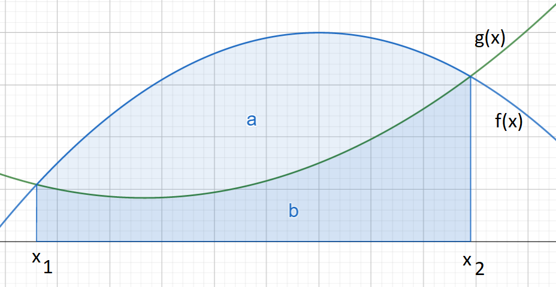
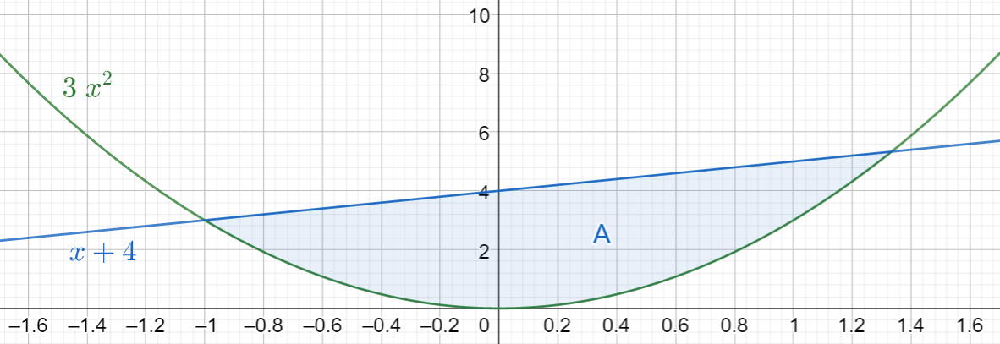
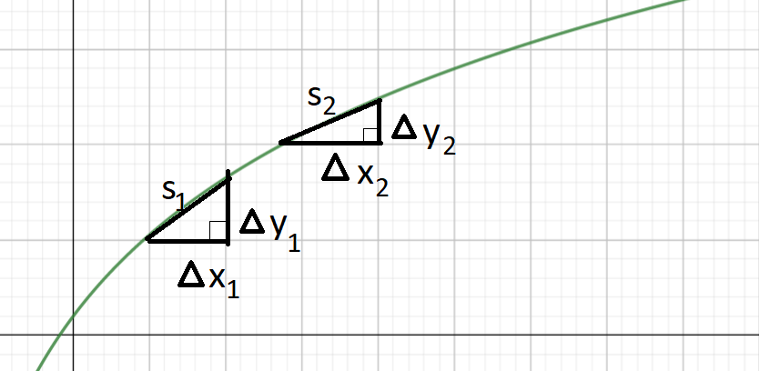

Määrätyn integraalin sovelluksia
Contents
Määrätyn integraalin sovelluksia#
Määrätyn integraalin avulla voidaan laskea funktioiden kuvaajien rajoittamia pinta-aloja. Käytännössä lasku voisi tuottaa esimerkiksi tiettynä aikavälinä kuljetun matkan, kun etenemisnopeus vaihtelee. Tarkastellaan tässä muutamia hieman erilaisia määrätyn integraalin sovelluksia.
Käyrien välisiä pinta-aloja#
Tähän asti määrätyn integraalin avulla on laskettu pinta-aloja funktion \(f(x)\) kuvaajan ja vaaka-akselin välillä, kun alue rajataan kahdella suoralla \(x=x_1\) ja \(x=x_2\). Pinta-aloja voidaan laskea myös kahden funktion, \(f(x)\) ja \(g(x)\), väliltä.

Tarkastellaan kuvan mukaista tilannetta. Merkitään funktioiden \(f(x)\) ja \(g(x)\) kuvaajien väliin jäävää pinta-alaa \(A\). Oletetaan, että \(f(x_1)=g(x_1)\) ja \(f(x_2)=g(x_2)\), eli funktioiden kuvaajan leikkaavat pisteissä \(x_1\) ja \(x_2\). Tällöin pinta-ala saadaan laskemalla:
\(A=\int_{x_1}^{x_2} f(x)~\text{d}x - \int_{x_1}^{x_2} g(x)~\text{d}x\)
Perusteluna laskukaavalle on:
\(\int_{x_1}^{x_2} f(x)~\text{d}x\) määrittää funktion \(f(x)\) ja \(x\)-akselin väliin jäävän pinta-alan \(a\)
\(\int_{x_1}^{x_2} g(x)~\text{d}x\) määrittää funktion \(g(x)\) ja \(x\)-akselin väliin jäävän pinta-alan \(b\)
edellisten alueiden erotus on funktioiden \(f(x)\) ja \(g(x)\) väliin jäävä pinta-ala \(A=a-b\)
Käytännössä ensin joudutaan lasketaan, milloin \(f(x)=g(x)\) eli miten valitaan määrätyn integraalin rajat \(x_1\) ja \(x_2\).
Esimerkki
Laske funktioiden \(3x^2\) ja \(x+4\) kuvaajien väliin jäävä pinta-ala. Funktioiden kuvaajat on esitetty alla.

Ratkaisu
Koska leikkauspisteiden välissä pätee \(x+4 \geq 3x^2\), niin valitaan \(f(x)=x+4\) ja \(g(x)=3x^2\). Lasketaan, milloin funktioiden arvot ovat yhtä suuret, eli missä pisteissä niiden kuvaajat leikkaavat:
\(3x^2=x+4\)
\(3x^2-x-4=0\)
\(x=\frac{-(-1)\pm \sqrt{(-1)^2-4\cdot 3\cdot (-4)}}{2\cdot 3}\)
\(x=\frac{1\pm \sqrt{49}}{6}\)
\(x=\frac{1\pm 7}{6}\)
Leikkauspisteiksi saadaan \(x_1=\frac{1-7}{6}=-1\) ja \(x_2=\frac{1+7}{6}=\frac{4}{3}\).
Nyt voidaan laskea ala:
\(\begin{align} & A=\int_{-1}^{4/3} x+4~\text{d}x - \int_{-1}^{4/3} 3x^2~\text{d}x \\ & = \overset{4/3}{\underset{-1}{/}} \frac{1}{2}x^2+4x - \overset{4/3}{\underset{-1}{/}} x^3 \\ & = \left[\left(\frac{1}{2}\cdot \left(\frac{4}{3}\right)^2+4\cdot\frac{4}{3}\right) - \left(\frac{1}{2}\cdot(-1)^2+4\cdot (-1)\right) \right]\\ & - \left[\left(\frac{4}{3}\right)^3-(-1)^3\right]\\ & = \left(\frac{16}{18}+\frac{16}{3}\right)-\left(\frac{1}{2}-4\right)-\left(\frac{64}{27}+1\right) \\ & = \frac{343}{54} \end{align}\)
Kaaren pituus#
Funktion \(f(x)\) kuvaajan kaaren pituus \(s\) välillä \(x_1 \leq x \leq x_2\) saadaan kaavalla
\(s=\int_{x_1}^{x_2} \sqrt{1+[f'(x)]^2}~\text{d}x\)
Perustelu
Perusteluna voidaan käyttää seuraavaa kuvaa:

Kaaren pituus \(s\) jakautuu osapituuksiin \(s_1,s_2, \dots s_n\). Jokaisen osan pituutta \(s_i\) approksimoidaan suorakulmaisen kolmion hypotenuusalla, kun kolmion kateetit ovat \(\Delta x_i\) ja \(\Delta y_i\). Kateettien avulla ilmaistuna pituus on Pythagoraan lauseen mukaisesti \(s_i=\sqrt{(\Delta x)^2+(\Delta y)^2}\). Neliöjuuren sisällä oleva lauseke voidaan kirjoittaa myös seuraavassa muodossa:
\((\Delta x_i)^2+(\Delta y_i)^2=(\Delta x_i)^2 \left(1+\frac{(\Delta y_i)^2}{(\Delta x_i)^2}\right)\)
Karkea arvo koko kaaren pituudelle saadaan summana näistä pituuksista:
\(s\approx \Sigma_{i=1}^n \sqrt{(\Delta x_i)^2 \left(1+\frac{(\Delta y_i)^2}{(\Delta y_i)^2}\right)}\)
Varsinaisesti kaaren pituus saadaan raja-arvona, jossa kaari on jaettu äärettömään moneen osaan \(s_i\):
\(s=\lim_{n\to\infty} \Sigma_{i=1}^n \sqrt{(\Delta x_i)^2 \left(1+\frac{(\Delta y_i)^2}{(\Delta x_i)^2}\right)}\)
Osamäärä \(\frac{\Delta y_i}{\Delta x_i}\) on sama kuin \(f'(x)\), jos \(\Delta x\) lähenee nollaa. Näinhän käykin, kun osapituuksen \(s_i\) määrä lähenee ääretöntä. Edelleen integraalin määritelmän perusteella summa, jossa yhteenlaskettavia on äärettömän monta, voidaan esittää integraalina:
\(s=\int \sqrt{1+[f'(x)]^2}~\text{d}x\)
Esimerkki
Laske funktiota \(f(x)=\frac{2}{3} x\sqrt{x}\) kuvaavan kaaren pituus välillä \(0 \leq x \leq 1\).
Ratkaisu
Kaaren pituuden laskukaavaan tarvitaan funktion \(f(x)\) derivaatta \(f'(x)\). Derivaatan laskua varten muutetaan funktio \(f(x)\) murtopotenssimuotoon:
\(f(x)= \frac{2}{3} x\cdot x^{1/2}= \frac{2}{3} x^{1+\frac{1}{2}}=\frac{2}{3} x^{\frac{3}{2}}\)
Derivaataksi saadaan nyt
\(f'(x)=\frac{2}{3}\cdot \frac{3}{2}x^{\frac{1}{2}}=x^{\frac{1}{2}}\)
Laskukaavaan tarvitaan derivaatan toinen potenssi:
\([f'(x)]^2=\left(x^{\frac{1}{2}}\right)^2=x\)
Sijoitetaan tämä kaaren pituuden laskukaavaan:
\(s=\int_0^1 \sqrt{1+x}~\text{d}x\)
Integraaliksi saadaan
\(\int \sqrt{1+x}~\text{d}x = \int (1+x)^{1/2}~\text{d}x = \frac{2}{3}(1+x)^{3/2}\)
Kaaren pituus on siis
\(s=\frac{2}{3} (1+1)^{3/2} - \frac{2}{3}(1+0)^{3/2} \approx 1.219\)
Funktion keskiarvo#
Funktion \(f(x)\) keskiarvo \(\overline{f}(x)\) arvojen \(x=a\) ja \(x=b\) välissä saadaan laskemalla:
\(\overline{f}(x)=\frac{1}{b-a} \int_a^b f(x)~\text{d}x\)
Perustelu
Perustellaan kaava seuraavasti:
jaetaan väli \([a,b]\) yhtä suuriin paloihin, joita on \(n\) kappaletta
jokaisen palan leveys on \(\Delta x = \frac{b-a}{n}\)
palojen määrä \(n\) voidaan ilmasta välin päätepisteiden ja osien leveyden avulla \(n=\frac{b-a}{\Delta x}\)
lasketaan funktiot arvot jokaisessa välin \([a,b]\) jakopisteessä \(x_1, x_2, \dots ,x_n\), arvot ovat siis \(f(x_1), f(x_2), \dots, f(x_n)\)
funktion keskiarvo on tällöin
\(\overline{f}(x)=\frac{f(x_1)+f(x_2)+\dots+f(x_n)}{n} \)
Sijoittamalla \(n=\frac{b-a}{\Delta x}\) saadaan
\(\overline{f}(x)= \frac{f(x_1)+f(x_2)+\dots+f(x_n)}{\frac{b-a}{\Delta x}}\),
joka sievenee muotoon
\(\overline{f}(x)= \frac{\Delta x}{b-a} \left(f(x_1)+f(x_2)+\dots+f(x_n)\right) = \frac{\Delta x}{b-a} \Sigma_{i=1}^n f(x_i)\),
missä \(\Sigma_{i=1}^n f(x_i)\) on lyhennysmerkintä summalle \(f(x_1)+f(x_2)+\dots+f(x_n)\).
Mitä enemmän on osavälejä, sitä tarkemmin funktion keskiarvo saadaan laskettua. Ääritapauksena lasketaan raja-arvo, jossa \(n \to \infty\):
\(\overline{f}(x)=\lim_{n \to \infty} \frac{1}{b-a} \Delta x \Sigma_{i=1}^n f(x_i)\)
eli toisin kirjoitettuna
\(\overline{f}(x)= \frac{1}{b-a} \lim_{n \to \infty} \Sigma_{i=1}^n f(x_i) \Delta x\),
jossa loppuosa on sama kuin määrätyn integraalin määritelmä:
\(\overline{f}(x)= \frac{1}{b-a} \int_a^b f(x)~\text{d}x\).
Esimerkki
Laske funktion \(f(x)=3x^2+2x\) keskiarvo välillä \(1\leq x \leq 3\).
Ratkaisu
Funktion \(f(x)=3x^2+2x\) integraalifunktio, jossa \(C=0\), on \(F(x)=x^3+x^2\).
Niinpä funktion keskiarvo annetulla välillä on
\(\begin{align} \overline{f}(x) & = \frac{1}{3-1} \int_1^3 3x^2+2x~\text{d}x \\ & = \frac{1}{2} \left((3^3+3^2)-(1^3+1^2)\right) \\ & = \frac{1}{2} (27+9-1-1) = 17\end{align}\)